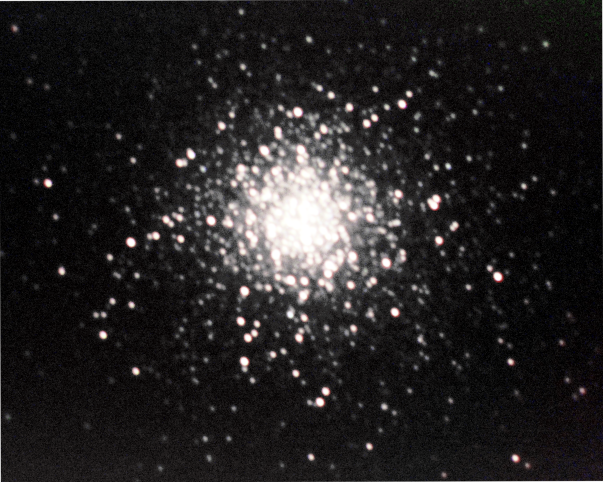

Deep Sky
M5, Rose Cluster 5-10-22 42 minute integration of the Rose Cluster in Luminance. RASA 8 telescope, 1600MM camera. Unguided.

Orion Nebula 1-14-22 30 minute integration of the Orion Nebula. RASA 8 telescope, 1600MM camera. Unguided.
Andromeda 11-18-21 2h of exposures in Ha, taken unguided in Bortle 7 skies. RASA 8" and ASI1600MM, mounted on a Celestron AVX.

M13 4-9-22 Stacked from 3h of imaging with a Samsung S9 camera mounted to an Orion Starblast 6i Dobsonian.

M15 30 minute stack.
Helix Nebula Stacked from 8 hours of images at OkieTex 2019 on a prototype Mach 2.
Solar System
Moon 5-15-22 The lunar eclipse moments before cloud cover ruined the night, taken on an Orion Starblast f/6 on a Galaxy S9 phone. Stack of best 1000 frames over a 30 second video. Processed in PIPP, AutoStakkert!, and GIMP. Left is with normal levels, while the right image has been enhanced with extra contrast.
Moon 12-18-21 A single exposure with a QHY5III Monochromatic camera, taken through an Orion Starblast 6i Newtonian, untracked.

Moon 7-17-21 Shot with a Samsung Galaxy S9 through an f/6 Orion StarBlast.

Comet 2018 W2 Africanus: Taken at OkieTex 2019 using the prototype Mach 2 mount. 50 image stack.

Lunar Eclipse 1-20-19
Gault 6478, 2-12-19: After a collision some time in November, Gault 6478 grew a tail. Measured here to 572,000 kilometers, this system is important to watch over time.
Star Fields
Star Field Taken on a RASA 8 for calibration.